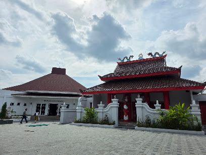
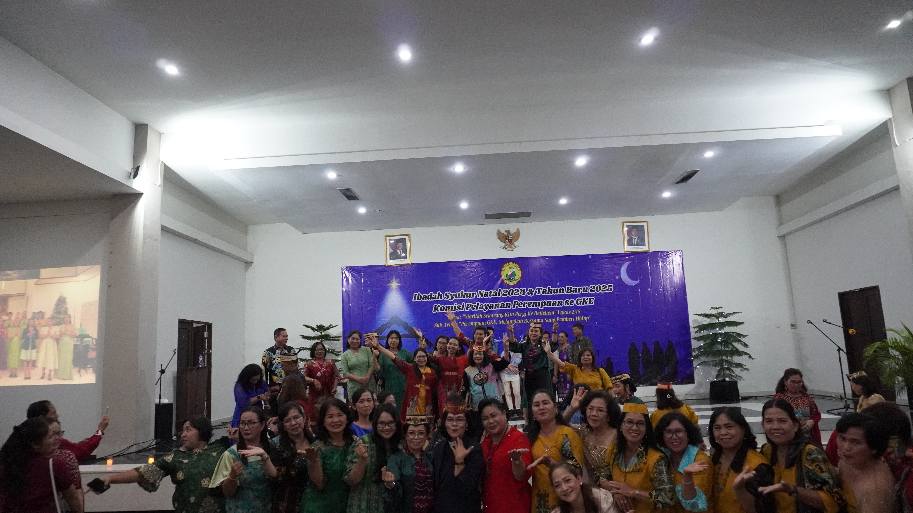
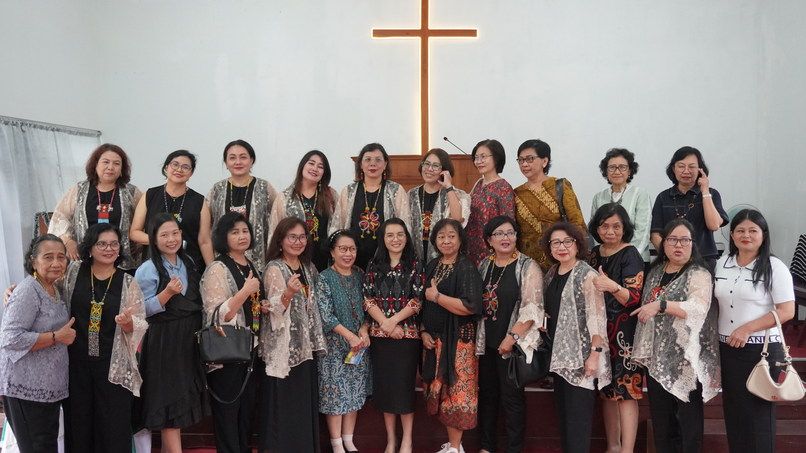
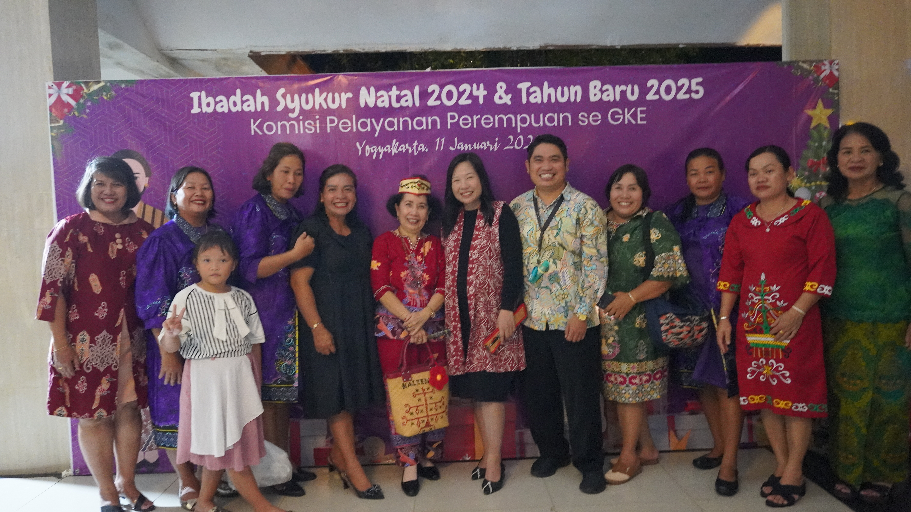

Syalom & Salam Sejahtera dalam Kasih Kristus,
Tamu Undangan
Dengan penuh sukacita dan kehangatan persaudaraan di tanah rantau, kami mengundang Bapak/Ibu/Saudara/i untuk hadir bersekutu dan merayakan Natal bersama dalam ikatan kasih keluarga besar Gereja Kristen Evangelis (GKE) Daerah Istimewa Yogyakarta.
"Bangkitlah, menjadi teranglah, sebab terangmu datang, dan kemuliaan TUHAN terbit atasmu."
— Yesaya 60:1 —
Informasi Acara
Waktu dan tempat perjumpaan ibadah & perayaan Natal
Sabtu, 12 Desember 2026
16:00 WIB - Selesai
Ibadah & Perayaan Natal

Grha Pembinaan Iman Kristen (GPIK)
Kompleks Fasilitas Kerohanian UGM
Jl. Podocarpus I, Sendowo, Sinduadi, Mlati, Sleman, DIY
Perjalanan & Kebersamaan
Potret kasih persaudaraan dan kehangatan keluarga GKE DIY di tanah rantau (Klik foto untuk memperbesar)





Konfirmasi Kehadiran
Mohon konfirmasikan kehadiran Bapak/Ibu/Saudara/i untuk kenyamanan bersama
Narahubung & Media Sosial
Silakan hubungi panitia jika membutuhkan informasi atau panduan lebih lanjut
Narahubung Panitia Natal
Hubungi panitia via WhatsApp untuk informasi seputar acara dan kehadiran:
Media Sosial Resmi
Ikuti warta kegiatan dan persekutuan GKE Daerah Istimewa Yogyakarta: